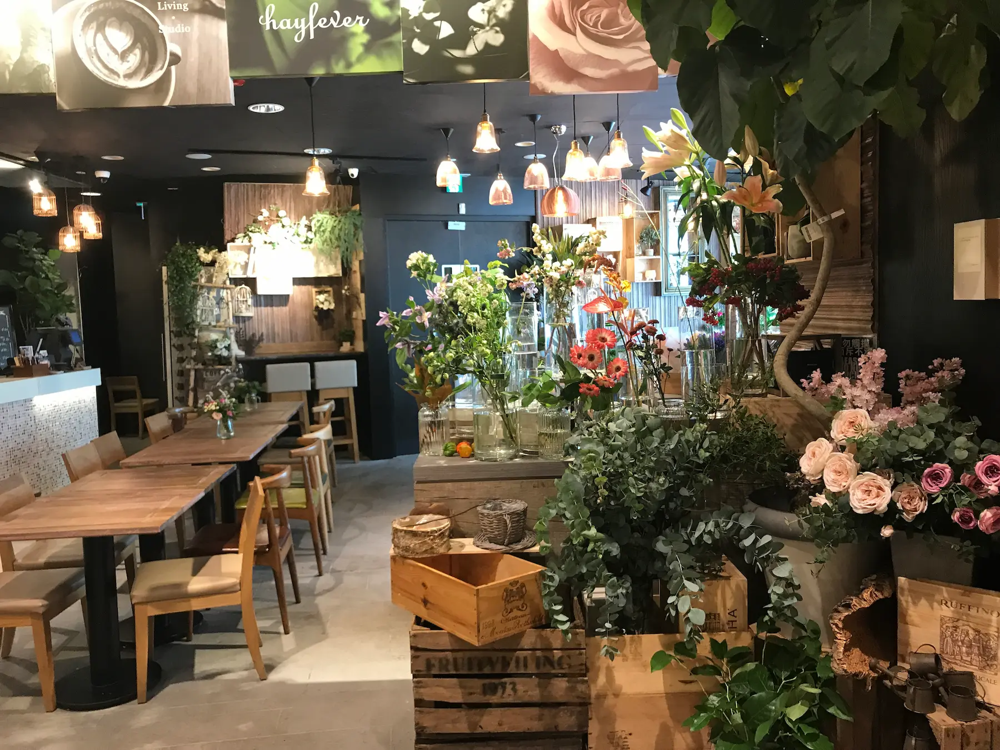
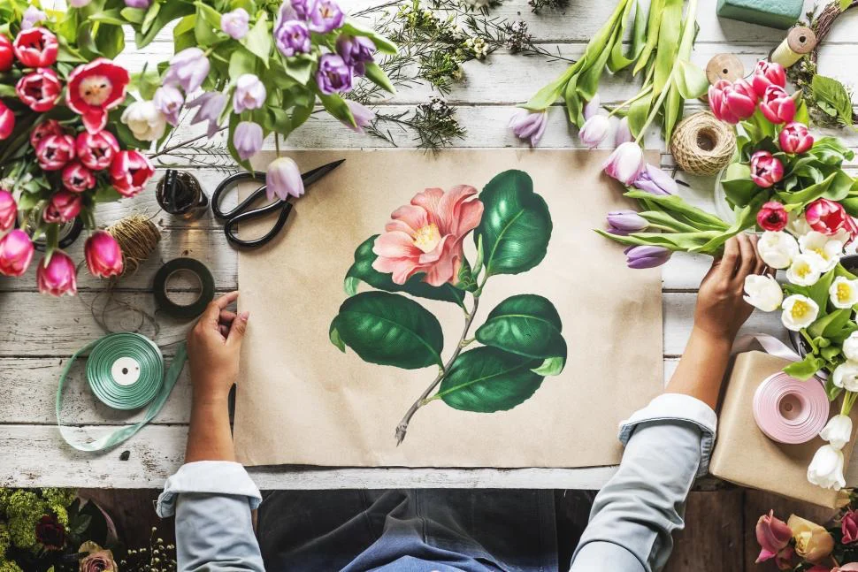

Bonjour, moi c'est Constance
Bienvenue dans mon univers floral. L'Atelier de Constance est né d'une passion dévorante pour les fleurs et d'un rêve : créer des compositions qui touchent le cœur autant qu'elles charment les yeux.
Depuis toute petite, j'ai été fascinée par la beauté éphémère des fleurs, par leurs couleurs, leurs textures, leurs parfums. Chaque pétale raconte une histoire, chaque tige porte une émotion.

La naissance d'un rêve
Après des années à travailler dans le monde corporate, j'ai ressenti un besoin profond de reconnecter avec ce qui me faisait vraiment vibrer. En 2023, j'ai quitté mon bureau pour ouvrir mon atelier dans le Marais, à Paris.
Ce lieu est devenu mon sanctuaire créatif, un espace où je peux laisser libre cours à mon imagination, expérimenter avec les formes, les couleurs et les textures. Chaque matin, je me réveille avec l'excitation de créer quelque chose de nouveau.

Ma vision
Pour moi, l'art floral n'est pas simplement une question d'esthétique. C'est une manière de capturer des émotions, de célébrer la vie, d'honorer les moments précieux.
Chaque composition que je crée est pensée comme une œuvre unique. Je travaille principalement avec des fleurs de saison, sourcées auprès de producteurs locaux qui partagent mes valeurs de qualité et de respect de la nature.
Mon style ? Un mélange d'élégance classique et de liberté moderne. J'aime jouer avec les contrastes, créer des harmonies inattendues, laisser la nature s'exprimer tout en guidant sa beauté.
Mes valeurs
Authenticité
Chaque création est unique et reflète ma vision personnelle. Pas de compositions en série, seulement des œuvres pensées avec soin.
Qualité
Je sélectionne méticuleusement chaque fleur, chaque feuille. Seule la perfection trouve sa place dans mes compositions.
Écoresponsabilité
Fleurs de saison, producteurs locaux, emballages recyclables. La beauté ne doit pas se faire au détriment de notre planète.
Passion
Chaque jour, je mets mon cœur dans mon travail. Créer des bouquets n'est pas juste mon métier, c'est ma raison d'être.
Merci de faire partie de cette aventure. Chaque commande, chaque sourire, chaque message chaleureux me rappelle pourquoi j'ai choisi cette voie. Ensemble, continuons à célébrer la beauté sous toutes ses formes.
Avec tout mon amour,
Constance